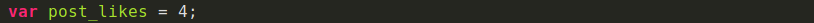

Una buena práctica para escribir código: nombrar elementos
¿Les ha pasado que están inspirados escribiendo código pero repentinamente necesitan una luz divina que les diga qué nombre ponerle a la variable que están a punto de escribir?
Como Fronted, hay tantas cosas que debo nombrar en mi día a día: clases para cada elemnto HTML, variables en Stylus que pueden ser reutilizables, componentes, archivos, funciones... Tengo que poner a volar mi imaginacion para poder lograrlo.
A pesar de que es algo que depende totalmente de nosotros y no hay una forma estrictamente
correcta o incorrecta de hacerlo, nombrar cada elemento es un trabajo en el que debemos poner empeño, pues se verá impactado
en la organizacion y mantenibilidad de nue Una buena práctica para escribir código: nombrar elementos
¿Les ha pasado que están inspirados escribiendo código pero repentinamente necesitan una luz divina que les diga qué nombre ponerle a la variable que están a punto de escribir?
Como Fronted, hay tantas cosas que debo nombrar en mi día a día: clases para cada elemnto HTML, variables en Stylus que pueden ser reutilizables, componentes, archivos, funciones... Tengo que poner a volar mi imaginacion para poder lograrlo.
A pesar de que es algo que depende totalmente de nosotros y no hay una forma estrictamente correcta o incorrecta de hacerlo, nombrar cada elemento es un trabajo en el que debemos poner empeño, pues se verá impactado en la organizacion y mantenibilidad de nuestro código.
Fanny es parte del Team Platzi. Si quieres una carrera en Frontend, empieza por el Curso de Desarrollo Web y luego el Curso de Responsive Design.
Lo más importante es que el nombre que le asignes siempre refleje el trabajo que está haciendo, de esta forma podemos incluso reducir la necesidad de comentar cada línea de código con su funcionamiento.
A continuación algunos consejos que hay que seguir para evitar algún desastre a la hora de nombrar un elemnto en tu código.
- Nombres descriptivos
- Nombres conformados por un conjunto de palabras
- La longitud de el nombre asignado
Nombres Descritos
Abreviar nombres puede que en algunos casos no sea tan buena idea. Seguramente con el paso del tiempo o cuando un nuevo desarrollador tenga que darle mantenimiento a tu código habrá quedado en el olvido lo que sea variable representa. Lo ideal es utilizar nombres que describan la funcionalidad de nuestro código.
Por ejemplo, es mucho más descriptivo escribir:

Que:

Nombres conformados por un conjunto de palabras
Generalmente los lenguajes de programación no permiten espacios en las variables. Sin embargo hay distintps métodos para separar el conjunto de palabras que conforman una variable y que de esta manera logren ser más legibles. Esto se puede hacer capitalizando cada palabra agrupada (camelCase) o separando cada palabra con underscore (snake_case).e_case).
Por ejemplo:
o

La Longitud de el nombre asignado
A pesar de que los nombres de variables cortos deben ser sustituidos por nombres de variables más largos y descriptivos, no quiere decir que tenemos que usar frases completas. Es importante que el nombre describa qué es lo que el código asignado hace y no cómo lo hace. Utilizar un nombre largo puede incluso ser más susceptible a errores tipográficos a la hora de escribirlo. Se dice que la longitud recomendable es de 2 a 4 palabras o entre 8 y 20 caracteres.
En conclusión nombrar elementos no es difícil, más bien es un súper poder o habilidad que va mejorando con la práctica. Nosotros como desarrolladores tenemos la responsabilidad de hacerlo lo mejor posible.
Si recién comienzas a programar, te invito al Curso de programación básica para empezar a implementar estos consejos en tus proyectos. Y si llevas ya tiempo programando sin hacer uso de ellos, compartenos cómo te va siguiendo estas recomendaciones. Estoy segura que ls desarrolladores que se topen con tu código en el futuro te lo agradecerán.
stro código.Fanny es parte del Team Platzi. Si quieres una carrera en Frontend, empieza por el Curso de Desarrollo Web y luego el Curso de Responsive Design.
Lo más importante es que el nombre que le asignes siempre refleje el trabajo que está haciendo, de esta forma podemos incluso reducir la necesidad de comentar cada línea de código con su funcionamiento.
A continuación algunos consejos que hay que seguir para evitar algún desastre a la hora de nombrar un elemnto en tu código.
- Nombres descriptivos
- Nombres conformados por un conjunto de palabras
- La longitud de el nombre asignado